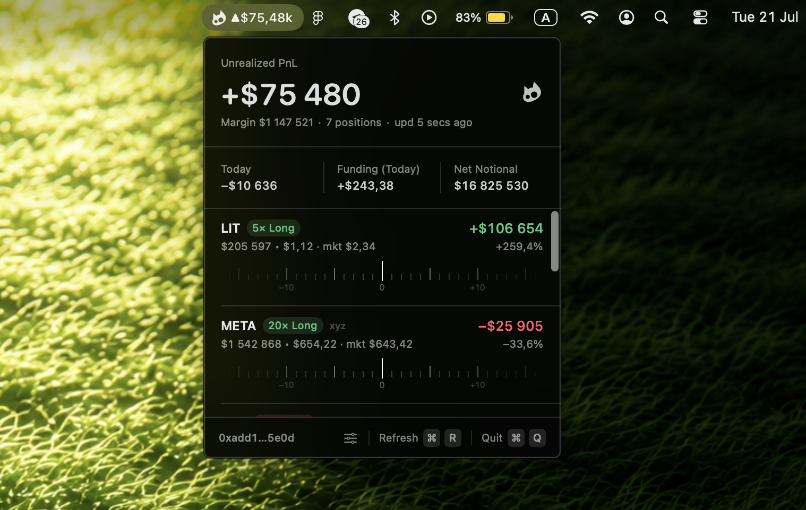

Conviction in the corner of your eye
Spotter is a native macOS menu bar app that keeps your Hyperliquid and Trade.xyz PnL in the corner of your eye — one glance, always current, no chart to overthink.

Features
Spotter is a native macOS menu bar app that keeps your Hyperliquid and Trade.xyz PnL in the corner of your eye — one glance, always current, no chart to overthink.
Dynamic Pnl Simulation
Drag the price. Feel the outcome. Your book re-prices under your finger.
Know −20% or +30% before the market shows you.
Margin $24,176 · 3 positions · upd 4 secs ago
Private by design
No login, no keys, no backend, no analytics. Just a public address in, numbers out.
No distraction
Your tab-switching habit dies in a day. One glance at the menu bar, the rest stays out of sight until you ask.
Installation
Github1. Download app
https://github.com/0xRoark/Spotter/releases/download/v0.1.9/Spotter.zip
- Go to Releases page and under the latest version, click Spotter.zip to download it.
- It lands in your Downloads folder and unzips to Spotter.app (double-click the .zip if it doesn't unzip on its own).
2. Move it to Applications
- Drag Spotter.app into your Applications folder.
3. Open it the first time
- In Applications, double-click Spotter.
- You'll see “Apple could not verify Spotter is free of malware.” Click Done.
- Open the Apple menu → System Settings → Privacy & Security.
- Scroll down to the Security section — you'll see “Spotter was blocked to protect your Mac.” Click Open Anyway.
4. Start tracking
- Look at the top-right of your menu bar — you'll see the Spotter cat.
- Paste a Hyperliquid or Trade.XYZ wallet address, and hit Track.
- Your live PnL now sits in the menu bar.